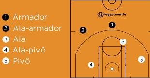
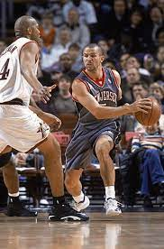

Funções jogadores de basquete

"Os jogadores da equipe possuem posições e funções definidas para a partida. Confira as características de cada posição:
Armador: é considerado, de maneira geral, aquele que melhor dribla e faz o passe de bola do time, às vezes, é chamado de ala esquerda.
Lançador: também conhecido como escolta, é o melhor que arremessa no time. Sua função é defender o armador e tentar ganhar espaço na quadra para arremessar a bola sem ser bloqueado.
Ala/pivô: próximo da cesta, este jogador se movimenta com o intuito de desmarcar e receber a bola nas situações de arremesso intermediário. Essa posição também possui habilidade com rebotes.
Ala/lateral: é o mais versátil do time, com habilidades como o equilíbrio. Geralmente, é melhor lançador do que o pivô e tende a ser mais baixo do que ele.
Pivô: também conhecido como central, geralmente é o mais alto da equipe. Sua função é permitir uma proximidade com a cesta, possibilitando um arremesso fácil. No momento da defesa, ele busca bloquear os arremessos e pegar os rebotes."
""Termos relacionados às jogadas de basquete""

"A seguir, o significado de alguns termos relacionados às jogadas do basquete:
Assistência: passe ao jogador que, logo em seguida, faz uma cesta.
Roubo de bola: quando o jogador consegue tirar a bola do adversário após um drible malsucedido.
Enterrada: quando o atleta “crava” a bola na cesta do adversário sem precisar arremessá-la.
Ponte aérea: passe alto de um jogador para o outro, que, em seguida, faz cesta com a bola ainda no ar.
Toco: jogada defensiva com o bloqueio de um arremesso quando a bola avança de maneira crescente no ar.
Duplo-duplo: quando o jogador consegue, pelo menos, 10 em dois quesitos diferentes: pontos, rebotes ou assistências.